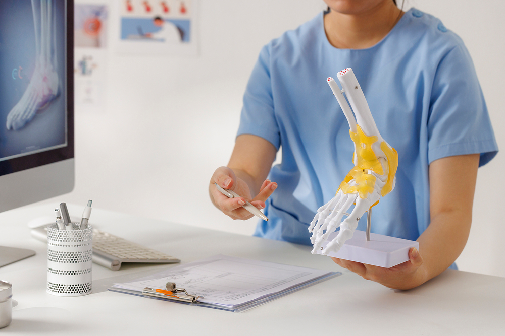

신발·통증 관리
앞코가 넓은 신발을 신고 필요에 따라 약물로 통증을 조절합니다.
엄지발가락이 둘째 발가락 쪽으로 기울고 관절 안쪽이 돌출되어
신발과 마찰하거나 걸을 때 통증이 생길 수 있습니다.
무지외반증은 엄지발가락 관절의 뼈 정렬이 변하는 질환입니다.
돌출된 부위가 신발에 눌려 붓거나 아플 수 있으며 진행하면 관절염이나 다른 발가락의 변형이 동반됩니다. 변형의 정도와 통증, 신발 착용의 불편함을 함께 평가합니다.

타고난 발의 형태와 생활 습관이 관련되며
일부에서는 다른 관절 질환도 원인이 될 수 있습니다.
유전적으로 물려받은 발의 구조가 변형의 발생에 영향을 줄 수 있습니다.
발가락을 좁은 공간에 모으는 신발은 엄지발가락 관절을 압박합니다.
류마티스관절염 등은 관절 변형과 관련될 수 있습니다.
일부 신경근육 질환은 발의 정렬과 관절 변형에 영향을 줄 수 있습니다.
돌출 부위가 신발에 눌려 붓거나 아프고
엄지발가락을 움직이거나 걸을 때 불편할 수 있습니다.
보조기와 신발 조절로 압박을 줄이며
불편함이 지속되면 변형 교정 수술의 필요성을 평가합니다.
앞코가 넓은 신발을 신고 필요에 따라 약물로 통증을 조절합니다.

상태에 맞는 패드나 보조기를 활용해 마찰과 부담을 줄입니다.

보존적 치료에도 보행이 불편하면 관절 정렬을 교정하는 수술을 검토합니다.
변형의 모양만으로 수술하지 않습니다. 통증과 신발 착용·보행의 불편함, 비수술적 관리의 효과 등을 함께 고려합니다.
발가락에 가해지는 압박과 불편함을 줄일 수 있지만, 이미 생긴 뼈의 변형을 원래대로 되돌린다고 보장할 수는 없습니다. 사용 목적과 한계를 상담하세요.
통증과 기능 제한, 변형 정도 및 생활 여건을 함께 평가합니다. 미용적인 모양보다 실제 불편함과 기대 효과·회복 과정을 충분히 상담하는 것이 중요합니다.